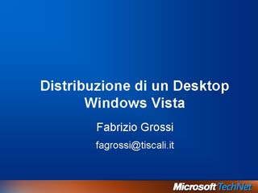

Windows Vista: Bringing Clarity to Your World
Speaker(s): Fabrizio Albergati
Windows Vista: Sicurezza e Protezione dei Dati
Speaker(s): Piergiorgio Malusardi
Distribuzione du un Desktop Windows Vista

Speaker(s): Fabrizio Grossi
Windows Server 2003 R2 Launch Keynote
Speaker(s): Manuel Maina
What Windows Server 2003 R2 Distributed File System Can Do for Branch / Remote Office Scenarios
Speaker(s):
Implementare la Collaborazione tra Aziende e Gestire l'accesso ad Applicazioni Web con Active Directory Federation Services
Speaker(s): Fabrizio Grossi
Windows Server 2003 R2 Interoperabilita con Unix
Speaker(s): Piergiorgio Malusardi